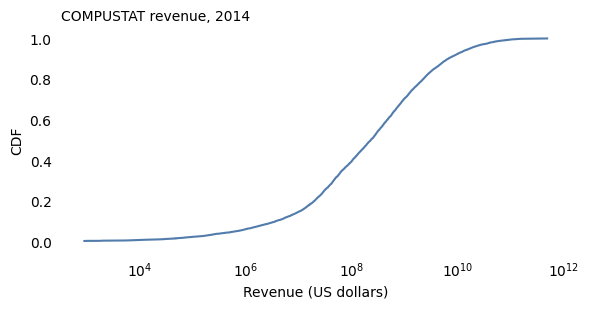
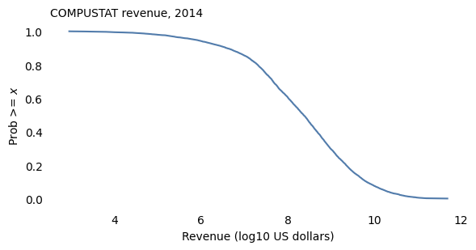
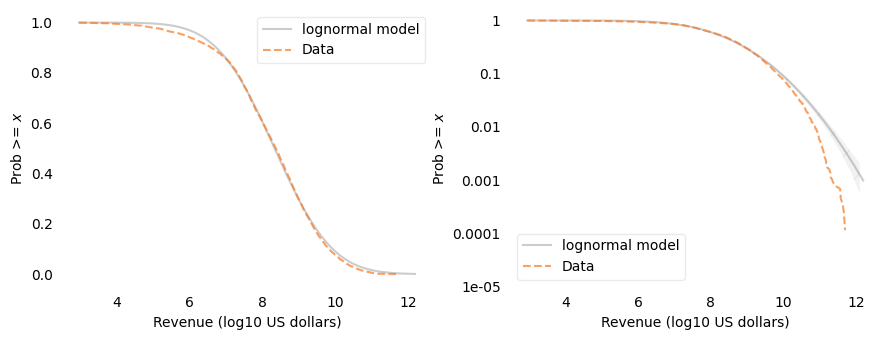
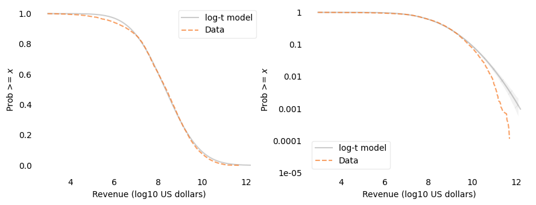
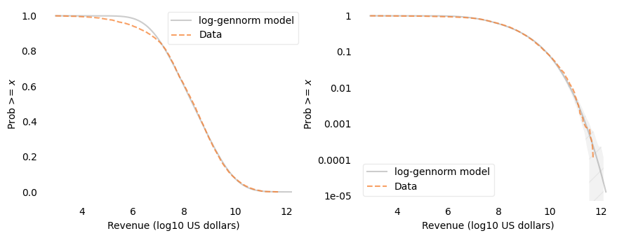
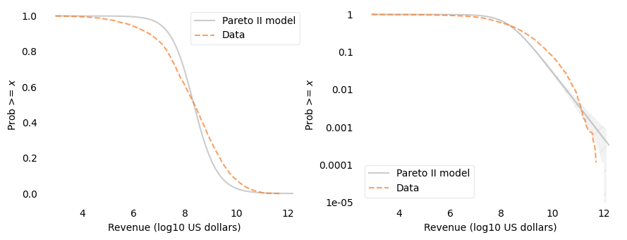
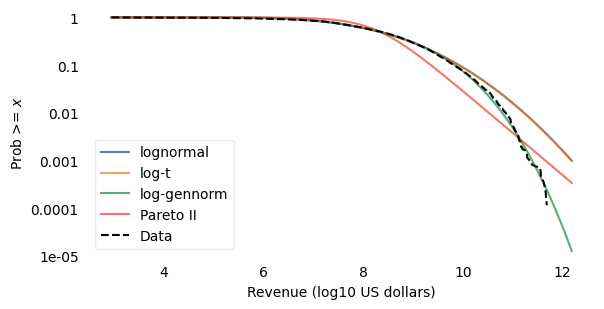

The Distribution of U.S. Firm Revenue#
In a previous example, I fit several models to the distribution of firm sizes measured by number of employees, using COMPUSTAT data. And in another example, I fit the same models to the distribution of revenue for French companies.
In this example, I’ll use the same COMPUSTAT data, but measure firm size by revenue, and fit the same models in the same way.
Click here to run this notebook on Colab.
Data#
Bloom, Nicholas, Jones, Charles I., Van Reenen, John, and Webb, Michael. Data and Code for: Are Ideas Getting Harder to Find?: Compustat: Compustat WRDS 2016 06 13.csv. Nashville, TN: American Economic Association [publisher], 2020. Ann Arbor, MI: Inter-university Consortium for Political and Social Research [distributor], 2020-03-30. https://doi.org/10.3886/E111743V2-209061
The extract is distributed with the openICPSR replication archive under CC BY 4.0, so we can redistribute it here. Individual firms count as research subjects under ICPSR rules, so we report only aggregate distributional results and do not identify particular companies.
COMPUSTAT reports two measures of revenue, sale and revt.
Where both are reported, they are the same, but revt is available for more firms, so I’ll use it.
Revenue is reported in millions, in the currency the firm reports in, which is either U.S. or Canadian dollars.
To convert Canadian dollars to U.S. dollars, I’ll use the annual average exchange rate from the Federal Reserve (H.10, FRED series AEXCAUS), which is the number of Canadian dollars per U.S. dollar. I use the rate for the calendar year that matches the fiscal year, so for firms whose fiscal year ends early in the calendar year, the conversion is approximate.
The following function converts revenue to U.S. dollars.
As with employment, the mean is far above what we would expect for all U.S. firms, because COMPUSTAT is dominated by large, mostly publicly traded companies.
Distribution of revenue#
Here is the CDF of revenue on a log-\(x\) scale.

On a log scale, the CDF has roughly the sigmoid shape of a normal distribution, so the lognormal model is a natural candidate.
Log revenue#
As in the other examples, I’ll work with the logarithm of revenue, base 10.

Fitting truncated models#
As in the employment example, I’ll treat the smallest value in the sample as a cutoff and truncate each model there, and fit the models using functions in tail_models.py:
Location and scale are chosen to match percentiles of the data (
fit_loc_scale).A shape parameter, if the model has one, is chosen to match the largest values – it minimizes the squared differences between the logarithms of the tail probabilities, from 1% down to the second-largest value (
fit_shape).
plot_two shows the data and a model on a linear-\(y\) scale and a log-\(y\) scale; on the log-\(y\) scale, the shaded area shows how much variation we would expect due to sampling if the model were correct.
model_errors computes the mean absolute difference between the tail distributions on the linear scale and the root mean squared difference between log tail probabilities.
Lognormal model#

On the linear-\(y\) scale, the lognormal model fits well above about $10 million; below that, the data are below the model, which means there are more firms with very small revenue than the model predicts. On the log-\(y\) scale, above about $10 billion, the data fall below the model, and for the largest firms the discrepancy is up to an order of magnitude – well outside the range we would expect from random sampling. As with employment, the largest firms are less common than the lognormal model predicts.
Log-Student-\(t\) model#
The Student-\(t\) distribution has a parameter, df, that controls the thickness of the tails; a log-Student-\(t\) model can only have thicker tails than the lognormal model.

As with employment, the fitted value of df is at the upper bound of the search, 1000, so the best log-\(t\) model is indistinguishable from the lognormal model: these data need thinner tails, not thicker ones.
Log-generalized-normal model#
The generalized normal distribution has a shape parameter, \(\beta\): \(\beta = 2\) is the normal distribution, \(\beta < 2\) has thicker tails, and \(\beta > 2\) has thinner tails.

The fitted value of \(\beta\) is about 2.9, greater than 2, so the departure from the lognormal model is toward thinner tails. On the log-\(y\) scale, the log-generalized-normal model fits well, with the data within the range we would expect from random sampling. On the linear-\(y\) scale, it has the same discrepancy below $10 million as the lognormal model.
Pareto model#
As in the other examples, I’ll use a Pareto II (Lomax) distribution, which has an exponent, \(\alpha\), and a scale parameter, \(s\):
where \(c\) is the cutoff.
fit_pareto2_alpha chooses \(\alpha\) to match the largest values, and fit_pareto2_scale chooses the scale to match percentiles.

The fitted exponent is about 0.89, and the scale is about $180 million. The Pareto II model does not fit this distribution: on the linear-\(y\) scale it is visibly off over most of the range, and on the log-\(y\) scale it is below the data between about $100 million and $100 billion and above the data for the largest firms.
Comparison#
Here are all four models on a log-\(y\) scale.

And here are the errors.
| Mean abs error | RMS log error | |
|---|---|---|
| lognormal | 0.0085 | 0.5402 |
| log-t | 0.0084 | 0.5352 |
| log-gennorm | 0.0085 | 0.0640 |
| Pareto II | 0.0763 | 0.3131 |
The lognormal and log-\(t\) curves are nearly the same. On the linear scale, the lognormal, log-\(t\), and log-generalized-normal models have about the same error; the Pareto II model’s error is about nine times larger. On the log scale, the log-generalized-normal model has the smallest error by a wide margin.
Robustness#
To see whether these results depend on the year or the cutoff, I’ll fit the lognormal, log-generalized-normal, and Pareto II models for each fiscal year from 2005 through 2014, and for several cutoffs. The following function selects the data, converting Canadian dollars at the rate for each year.
Here are the results for each year, using all firms with positive revenue.
With no cutoff argument, fit_models uses the smallest value as the cutoff.
| n | beta | alpha | log_scale | rmse_lognormal | rmse_gennorm | rmse_pareto | |
|---|---|---|---|---|---|---|---|
| 2005 | 10194.0 | 2.409 | 0.895 | 8.076 | 0.342 | 0.094 | 0.314 |
| 2006 | 9924.0 | 2.409 | 0.888 | 8.117 | 0.349 | 0.115 | 0.322 |
| 2007 | 9454.0 | 2.421 | 0.877 | 8.147 | 0.355 | 0.135 | 0.331 |
| 2008 | 9180.0 | 2.394 | 0.883 | 8.179 | 0.327 | 0.099 | 0.308 |
| 2009 | 9040.0 | 2.413 | 0.884 | 8.146 | 0.354 | 0.157 | 0.341 |
| 2010 | 8918.0 | 2.445 | 0.877 | 8.180 | 0.366 | 0.131 | 0.329 |
| 2011 | 8814.0 | 2.515 | 0.870 | 8.207 | 0.386 | 0.098 | 0.313 |
| 2012 | 9107.0 | 2.665 | 0.854 | 8.153 | 0.466 | 0.081 | 0.318 |
| 2013 | 9101.0 | 2.761 | 0.857 | 8.168 | 0.498 | 0.072 | 0.318 |
| 2014 | 8697.0 | 2.891 | 0.885 | 8.263 | 0.540 | 0.064 | 0.313 |
In every year from 2005 through 2014, the log-generalized-normal model fits best on the log scale, with \(\beta\) between 2.4 and 2.9 – always thinner-tailed than the lognormal model. The fitted value of \(\beta\) increases after 2010. The lognormal and Pareto II models fit substantially worse in every year, and the Pareto exponent is between 0.85 and 0.90.
And here are the results for fiscal year 2014 with several cutoffs.
| n | beta | alpha | log_scale | rmse_lognormal | rmse_gennorm | rmse_pareto | |
|---|---|---|---|---|---|---|---|
| $1,000,000 | 8190.0 | 2.645 | 0.916 | 8.378 | 0.458 | 0.073 | 0.300 |
| $10,000,000 | 7433.0 | 2.663 | 0.966 | 8.544 | 0.480 | 0.070 | 0.282 |
| $100,000,000 | 5266.0 | 2.646 | 1.111 | 8.999 | 0.301 | 0.072 | 0.228 |
| $1,000,000,000 | 2569.0 | 19.999 | 1.366 | 9.623 | 0.323 | 0.171 | 0.154 |
With cutoffs of $1 million, $10 million, and $100 million, the results hardly change: \(\beta\) is about 2.65 and the log-generalized-normal model fits well. So the discrepancy among the smallest firms doesn’t affect the fitted shape.
With the $1 billion cutoff, \(\beta\) reaches the upper bound of the search, 20, so that fit is not meaningful. The Pareto II exponent increases with the cutoff, from about 0.92 to about 1.37, and with the $1 billion cutoff the Pareto II model fits a little better than the others – but among these roughly 2,600 firms, none of the models fits as well as the log-generalized-normal model does for the whole sample.
Summary#
For COMPUSTAT revenue in 2014, the lognormal model fits most of the distribution, but the largest firms are less common than it predicts – the same pattern as for employment.
A log-Student-\(t\) model can’t help, because it can only make the tails thicker.
A log-generalized-normal model with \(\beta\) about 2.9 fits the upper part of the distribution well, and it fits best on the log scale in every year from 2005 through 2014, with \(\beta\) between 2.4 and 2.9. The fitted shape is about the same for cutoffs from $1 million to $100 million.
A Pareto II model does not fit the whole sample; above $1 billion it does a little better than the others, with exponent about 1.4.
Copyright 2026 Allen B. Downey
Example related to Chapters 4 and 8 from Probably Overthinking It.
License: Attribution-NonCommercial-ShareAlike 4.0 International (CC BY-NC-SA 4.0)